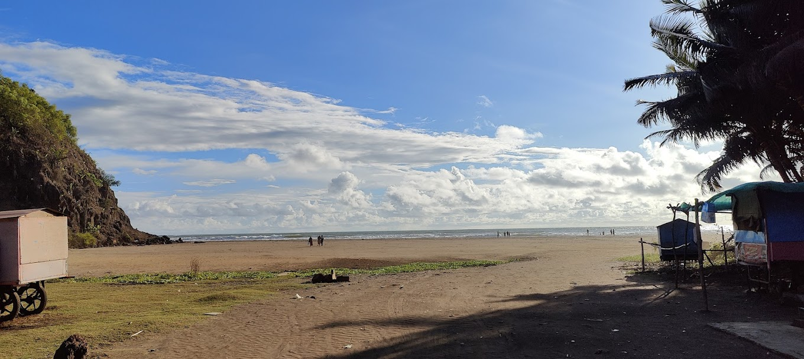
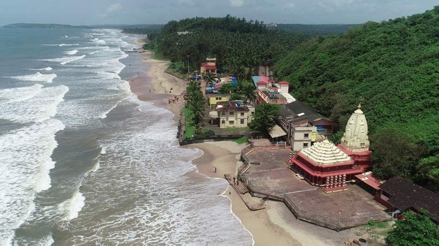
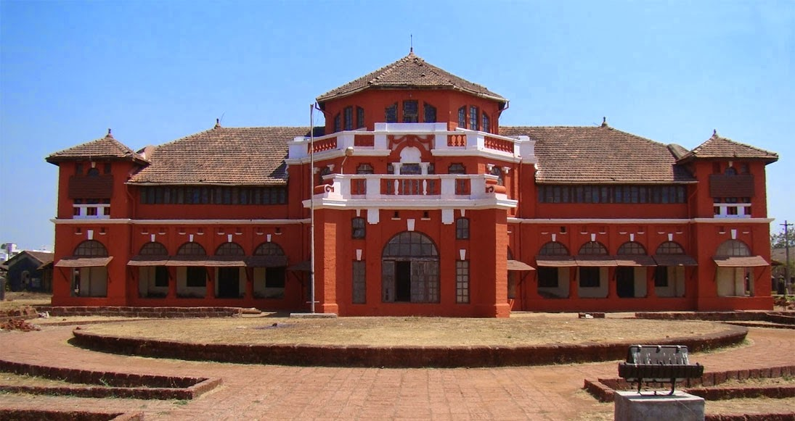
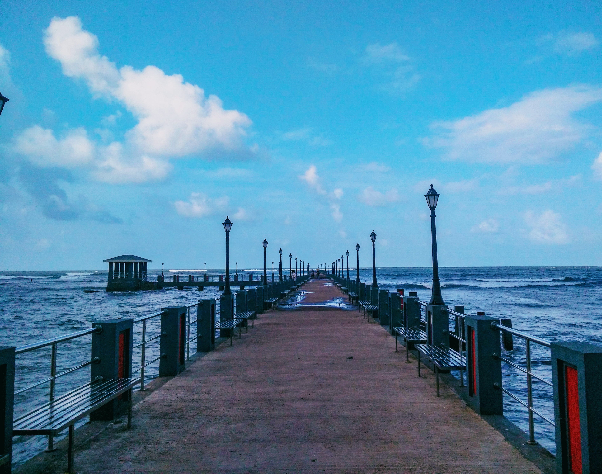

𝐑𝐀𝐓𝐍𝐀𝐆𝐈𝐑𝐈
RATNAGIRI

Bhatye Beach
Bhatye is the biggest town in Konkan and one of the immediate suburbs of Ratnagiri town. A wonderful beach in the background of the jagged Sahyadri mountain ranges provides a panoramic view of the surroundings areas. The bluish water, vast expansion of silvery sands and the clean environs sprinkled with casuarinas, Bhatye beach gives exciting oppourtunities for water sports.The unpolluted air, clear sky, the vast expansion of bluish water, a quite evening, the lovely Bhatye beach is a perfect place to admire the romantic sunset.

Ganpatipule
The temple of Swayambhu is frequented by thousands every year. The lord Ganesha at Ganpatipule is considered to be the Paschim Dwardevata (Western Sentinel God of India) and those visiting Ganpatipule make it a point to pay their respect to this deity. The 400 year old Ganpati idol at Ganpatipule is said to have sprung up from the earth. The temple is situated right on the beach at the base of a hill and devotes and pilgrims walk around the hill (1 km pradakshina) as a mark of respect.

Thiba palace
The palace was built in 1910 by the British to house arrest the Burma King, Thiba. He was the last ruler of Brahmadesh (today's Myanmar), where he ruled for seven years. The British army took over Brahmadesh & captured his land. To keep an eye on his rebellious activities, the British transferred him to Madras (Chennai) & then to Ratnagiri. Around 30 years of his life, King Thiba was under house arrest. The history of this unfortunate King is heartbreaking and underlines importance of the Palace

Mandavi Beach
At a distance of 2 km from Ratnagiri Bus Stand, Mandavi Beach is located in the vicinity of Ratnagiri Town of Maharashtra. This is one of the most crowded beaches in Ratnagiri region. Mandavi Beach is blessed with beautiful seashore, which extends right up to Rajiwanda Port. This fabulous beach is surrounded by Ratnadurg Fort in the west and the majestic Arabian Sea to the south. The beach is known for its black sand and hence, the beach is often referred to as Black Sea. ratnagiri. Mandavi also has the Ratnagiri Jetty along with Gateway of Ratnagiri, which is a place for evening hang out. The Gateway of Ratnagiri is a preposterous structure with a slopped roof. The popular belief is that this structure is the work of the Pratinidhi Dhondu Bhaskar. It is a fabulous construction overlooking the majestic Arabian Sea and provides a unique opportunity to walk through the seashore and enjoy the cool breeze that gently flows from the sea.